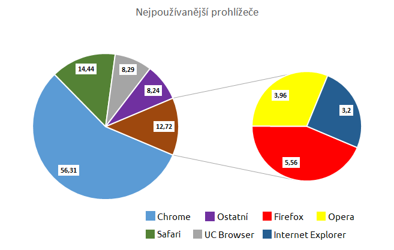

Podle analytické společnosti StatCounter je Chrome nejvíc používaným prohlížečem za leden 2018. Pojďme seřadit uvedené prohlížeče v tabulce podle grafu od nejpoužívanějšího po nejméně používaný.

Tady mám ještě nějaká vlastní data, která jsem si vymyslel. Dovedeš to správně seřadit?